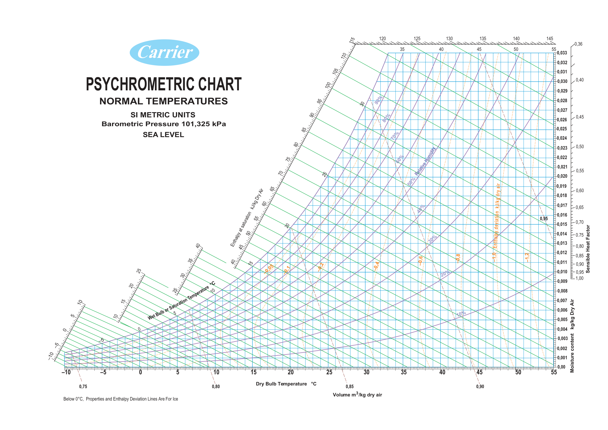

27 Psychrometric Chart and Evaporative Cooling
Here we will learn a bit about the psychrmetric chart - what it is how to read it and how to use it in python. In addition we will learn a bit about evaporative cooling and calculations that can be done.
27.1 Psychrometric Chart

Hi-res pdf of the graph above.
The chart allows us to study the relation between:
- Air temperature
- Relative humidity
- Dew point
- Wet bulb temperature
- Moisture content
- Enthalpy
- Air volume
You can read more about all of these here.
Information about how to read the chart can be found here.
27.2 Evaporative cooling (wiki)
Evaporative coolers lower the temperature of air using the principle of evaporative cooling. Evaporative cooling is the conversion of liquid water into vapor using the thermal energy in the air, resulting in a lower air temperature. The energy needed to evaporate the water is taken from the air in the form of sensible heat, which affects the temperature of the air, and converted into latent heat, the energy present in the water vapor component of the air, whilst the air remains at a constant enthalpy value. This conversion of sensible heat to latent heat is known as an isenthalpic process because it occurs at a constant enthalpy value. Evaporative cooling therefore causes a drop in the temperature of air proportional to the sensible heat drop and an increase in humidity proportional to the latent heat gain. Evaporative cooling can be visualized using a psychrometric chart by finding the initial air condition and moving along a line of constant enthalpy toward a state of higher humidity
In the green house we have an evaporative cooler as shown in this diagram:


Water trickles on a celullose pad, then fans push dry air from outside through the pad in which water evaporates and the air gets colder and humidity rises.
27.3 How much can the cooler cool?
The evaporative cooler can cool as low as the “wet bulb trmperature”.
We can look at the chart, and we should for the first time… But let’s calculate it using the PschroLib python package.
All the library’s functions can be found here.
import psychrolib
# Set the unit system, for example to SI (can be either SI or IP) - this needs to be done only once
psychrolib.SetUnitSystem(psychrolib.SI)
altitude = 0
atm_pressure = psychrolib.GetStandardAtmPressure(0)
# Calculate the wet bulb temperature for a dry bulb temperature of 25 C , a relative humidity of 80% and atmospheric pressure (kPa)
WBT = psychrolib.GetTWetBulbFromRelHum(25.0, 0.80,atm_pressure )
print(f'Wet Bulb Temperature: {WBT:.3f} degree C')
print(f'Degrees cooled: {25-WBT:.3f} degree C')Output:
Wet Bulb Temperature: 22.380 degree C
Degrees cooled: 2.620 degree CNow let’s see how many degrees will it cool if we have only 30% relative humidity outside:
WBT = psychrolib.GetTWetBulbFromRelHum(25.0, 0.30,atm_pressure )
print(f'Wet Bulb Temperature: {WBT:.3f} degree C')
print(f'Degrees cooled: {25-WBT:.3f} degree C')Output:
Wet Bulb Temperature: 14.422 degree C
Degrees cooled: 10.578 degree CAs you can see it is much more efficient in dry areas like deserts. Therefore it is many times called a “desert cooler”. What will the relative humidity be for the air that leaves the pad?
27.3.1 Efficiency
Theoretically, an evaporative cooler cools down to the wet bulb temperature, but in reality it is not 100% efficient and the air comes out not as cold. Many factors can influence: water quality, air speed, pad thickness, pad condition (you will se that ours is not great…), etc. We can calculate the efficiency by this equation:
\[ \eta = \dfrac{T_i-T_o}{T_i-T_w}, \]
where
- \(T_i = \:\) temperature coming into the pad.
- \(T_o = \:\) temperature coming out of the pad.
- \(T_w = \:\) wet bulb temperature.
We can calculate it using data from our sensors and learn about the greenhouse we are using.
For example:
If we measure 30C and 60% humidity outside and the temperature out of the pad is 26C
T_i = 30
T_o = 26
T_w = psychrolib.GetTWetBulbFromRelHum(T_i, 0.60,atm_pressure )
print(f'Wet Bulb Temperature: {T_w:.3f} degree C')
effi = (T_i-T_o)/(T_i-T_w)
print(f'Efficiency is: {100*effi:.3f} %')Output:
Wet Bulb Temperature: 23.812 degree C
Efficiency is: 64.646 %27.3.2 What else can we calculate?
Knowing the fan’s capacity (we can measure that too using wind sensors) and the temerature and humidity of the air leaving the greenhouse we can calculate:
- Amount of water evaporated from the pad,
- Amount of water evaporated from the greenhouse (being a concreete greenhouse that means total evaporation from plants and pots),
- Heat removed from the greenouse by the flowing air,
These are just some ideas, you can think of other interesting things to calculate.
There are existing models for predicting the temperatures of greenhouses. There are many other factors taking place such as solar radiation, outside wind, amounts of plants in the greenhouse, etc. We won’t be studying those here, but maybe you can come up with some models/conclusions/correlations of your own :)